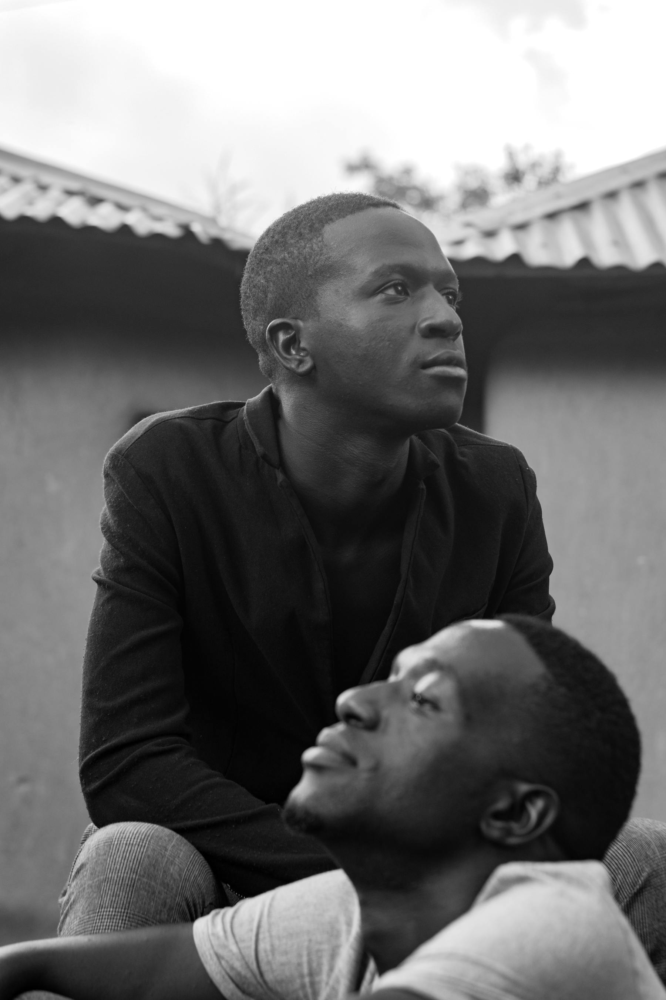

Kenya-grounded
We do not report "Africa stories." We report Kenyan stories: specific counties, specific markets, specific people.

Who We Are
Cinq was built because important Kenyan stories were being told badly, briefly, or not at all. We are not a PR agency. We are not a content mill. We are an editorial desk producing independent, multimedia journalism for public-interest media.
Who We Are
We built Cinq because we kept watching the same story get published three ways: too fast, too thin, and without a single person quoted by name. A story is not finished when the writer submits it. It is finished when the editor, photographer, audio producer, and fact-checker have all signed off. Kutoka chini, kweli kweli.

Operating Code
The design is clean. The discipline underneath it is what makes the publication worth reading. Four principles govern every story we touch, whether it is a 400-word brief or a six-part investigation.
We do not report "Africa stories." We report Kenyan stories: specific counties, specific markets, specific people.
Every story shows when it was filed and when it was last updated. A story from 2023 is not the same story as one filed this morning.
Speed is not the enemy of accuracy. Carelessness is. Corrections live in the body of the story with a new timestamp.
A photograph is not decoration. It is half the story. Every image is assigned, directed, cleared, and captioned.
How The Desk Works
From a single reported brief to a six-part multimedia series, every Cinq project follows the same three-stage structure. One team. One brief. One delivery.
The brief is written before the camera is picked up: title, angle, audience, sources, format, word count, image requirements, audio needs, and publish date.
Copy, images, audio, and video are produced in parallel where possible. Nothing merges until every component meets the standard.
The finished package is published with a live timestamp. The homepage and journal feed re-rank automatically by publish date.
Five Star Production